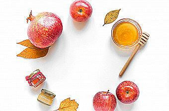
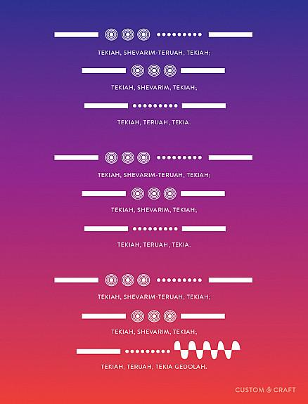
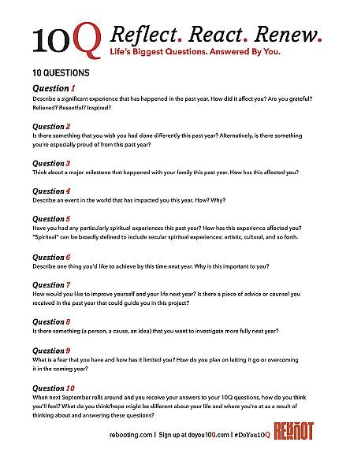

Right now we are at the end of the Shmita (or Sabbatical) year. At this time in ancient israel, all loans between people were forgiven. Imagine Biden's student loan forgiveness but much more widespread.
Questions to ponder:
In the 1st century BCE, Rabbi Hillel, seeing that people in need could not get loans, instituted a work around such that loans would not need to be forgiven.
Questions to ponder:
These are not easy questions, and we will not have time to solve them tonight. Change and understand take time. As we enter a new seven year Shmita cycle, we can work towards ensuring that the world in 7 years is better than it currently is today.
Happy New Year! Traditionally, the Jewish New Year, Rosh Hashanah, is a time of introspection and reflection. How did we do in the past year? What are we hoping to change in the coming year? During this meal we will rejoice in being together, and think backwards on the year that was, and forward to the year that will be. Plus delicious food, puns, and casting off some bad karma. To a sweet new year!
To bring in the new year, our litergy has songs that help us reflect on the past year and where we are going. Many modern songs can also have that effect. Some people have shared songs that help them reflect. We will listen to each followed by an explination of why the song reminds them of the new year. Feel free to follow with the lyrics below
Ariana - Awake my soul by Mumford & Sons
Rob - New morning by Bob Dylan
Lisa - Island in the sun by Weezer
Lois - The circle game by Joni Mitchell
Kelsey - Begin again by Taylor Wwift
Mark - Level up by Vienna Teng
The shehechiyanu blessing thanks the creator for giving us life, sustaining us, and allowing us to reach this day. This blessing is said at momentous occasions, and tonight counts because it is the night when we can finally look back on the whole previous year. We made it! Whether bitter or sweet, difficult or fun, tonight we celebrate and feel grateful for making it to today, and to this table to reflect with people we care about.
בָּרוּך אַתָּה יי אֱלֹהֵינוּ מֶלֶך הָעוֹלָם שֶׁהֶחֱיָנוּ וקְִיְמָּנוּ והְִגִיּעָנוּ לַזְמַן הַזֶה
Barukh ata adonai elohenu melekh ha’olam, shehecheyanu, v’kiyimanu, v’higiyanu la’z’man ha’zeh
Blessed are You, Adonai our God, Ruler of the Universe who has given us life, sustained us, and allowed us to reach this day.
Wine or grape juice are also standards of nearly every Jewish holiday. Before we eat we take a moment to say a blessing over a glass of wine. In this special version Rosh Hashanah is called Yom HaZikaron, the Day of Remembering, and Yom Truah, the Day of Calling Out. Tonight during our meal we will do some remembering, and some calling out. We will also focus on the gratitude we feel for the past year, and all of the blessings that it contained. L’chaim!
בָּרוּךְ אַתָּה יְיָ אֱלֹהֵֽינוּ מֶֽלֶךְ הָעוֹלָם בּוֹרֵא פְּרִי הַגָּֽפֶן
Barukh ata Adonai Eloheinu melekh ha’ olam borei peri hagafen.
Blessed are You, Adonai our God, Ruler of the universe, who creates the fruit of the vine.
On Rosh Hashanah and throughout the High Holiday season, we eat challah in the shape of a circle, to symbolize the circle of time, and the fullness of the year that is coming. Many people add even more sweetness to their first challah of the new year by adding apples and raisins or by drizzling honey or jam on top. As you take a bite, share with others around the table how you hope to bring sweetness into the world in the New Year.
בָּרוּךְ אַתָּה יְיָ אֱלֹהֵֽינוּ מֶֽלֶךְ הָעוֹלָם הַמּֽוֹצִיא לֶֽחֶם מִן הָאָֽרֶץ
Barukh ata Adonai Eloheinu melekh ha’olam, hamotzi lekhem min ha-aretz.
Blessed are You, Adonai our God, Ruler of the universe, Who brings forth bread from the earth.
For Ashkenazi Jews, the primary symbolic food of Rosh Hashanah is apples dipped in honey, a way of wishing for a sweet new year. Before eating apples and honey, say the following blessings:
בָּרוּךְ אַתָּה יְ‑יָ אֱ‑לֹהֵינוּ מֶלֶךְ הָעוֹלָם בּוֹרֵא פְּרִי הָעֵץ
Barukh atah Adonai Eloheinu melekh ha'olam borei pri ha-eitz.
Blessed are You, God, Ruler of the universe, who creates fruit of the tree.
יְהִי רָצוֹן שֶׁתְּחַדֵּשׁ עָלֵנוּ שָׁנָה טוֹבָה וּמְתוּקָה
Yehi ratzon lifanecha, Adonai Eloheinu, v'Elohai avoteinu, she'te'hadesh aleinu shanah tovah u'metukah.
May it be Your will, Adonai our God, to grant us a good and sweet year.
In sephardi traditions, Rosh Hashanah seders typically involve foods whose meanings are symbolized with puns. Since they are often based on aramaic and hebrew, they often don't translate well. Have you ever associated beets with retreating?
Since most of us speak english more proficiently than ancient hebrew, our our seder plate has english based puns. Let's bring out the seder plate.
There are ten items on the seder plate, each a pun as a part of our communal wish for the new year. We can say together:
Funnel our time and Pare our pickles So we can have a peaceful head of season
The items on the plate symbolize:
Hear the Call, Heed the Call
“It will be a day of sounding for you – Yom Teruah yih’yeh la-chem,” our liturgy reads.
At this High Holiday season, we sound the shofar, the ram’s horn, to awaken our hearts and minds to the work of these days—the work of reflection, of atonement, of renewal.
The shofar’s plaintive wailing and piercing cries ask us to pay attention to those who live at the margins: the world’s nearly 80 million displaced people.
We hear the shofar calling us to our most deeply held values: to compassion, to welcome, to justice.
But it is not enough to merely hear the shofar. The Psalmist tells us that we are to know the sound of the shofar. To know the sound of the shofar is to heed its invitation to act on our values.
We heed the shofar’s call when we take action for the world’s refugees and asylum seekers, those whose lives are in danger for being who they are.
We heed the shofar’s call when we ensure that refugees and asylum seekers have pathways and resources to rebuild their lives in safety and with dignity.
We heed the shofar’s call when we speak out against anti-immigrant and anti-refugee sentiment, standing in solidarity with the oppressed—neighbor and stranger alike.
That is what it means to know the shofar’s call—not only to hear it but also to heed it.
We move from tekiyah—the first call of the shofar—to tekiyah gedolah—the great, final blast—by joining our voices, demanding that fear and racism are replaced with understanding and righteousness.
Like the twists and curves of the ram’s horn, the path forward is winding and sometimes uncertain. However the path unfolds, though, the sound of the shofar is clear as it stirs our souls.
Yom Teruah yih’yeh lanu—it is a day of sounding for us. May the sound of the shofar and the sound of our voices lifted together announce to all those seeking refuge that they are respected, protected, and welcomed.
The shofar is our ancient, animalistic alarm clock. Hearing it tells us to wake up and it's a mitzvah, a commandment to hear its call. We say the first blessing before the shofar is sounded, then we say shehecheyanu, the blessing for milestones, to mark the occasion.
בָּרוּךְ אַתָּה ה', אֱ-לֹהֵינוּ מֶלֶךְ הָעוֹלָם, אֲשֶׁר קִדְּשָׁנוּ בְּמִצְוֹתָיו, וְצִוָּנוּ לִשְׁמֹעַ קוֹל שׁוֹפָר
Baruch ata Adonai Eloheinu melekh ha-olam asher kidshanu b’mitzvotav v’tzivanu lishmoa kol shofar.
Blessed are You, Adonai our God, Ruler of the universe, who has made us holy with commandments, and who has commanded us to hear the voice of the shofar.


During this time between Rosh Hashanah and Yom Kippur, you can take time to reflect by answering one question per day in your own secret online 10Q space. Make your answers serious. Silly. Salacious. However you like. It's your 10Q. When you're finished, hit the magic button and your answers get sent to the secure online 10Q vault for safekeeping. One year later, the vault will open and your answers will land back in your email inbox for private reflection. Want to keep them secret? Perfect. Want to share them, either anonymously or with attribution, with the wider 10Q community? You can do that too.
Next year the whole process begins again. And the year after that, and the year after that. Do you 10Q?
Sign up at: https://www.doyou10q.com/